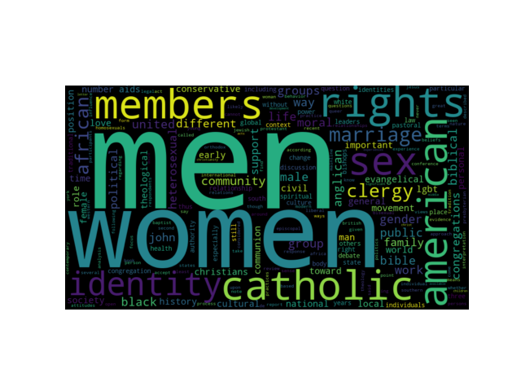
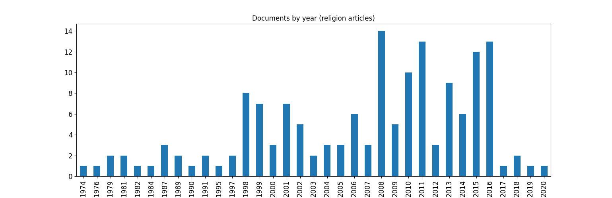
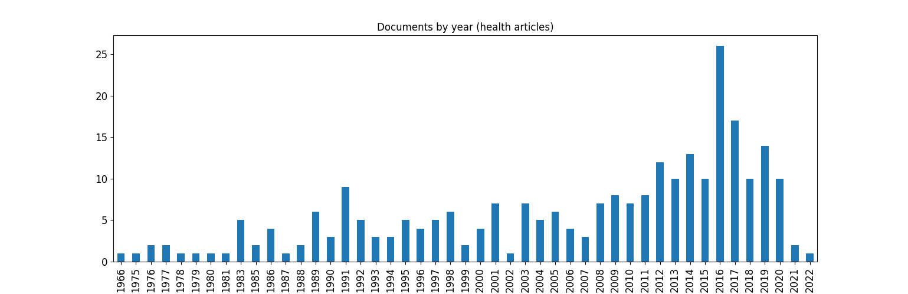
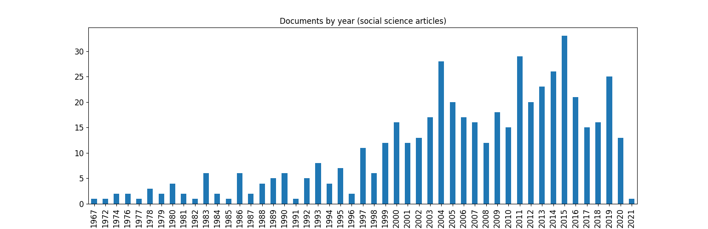

This website was created by Anastasiya Sopyryaeva, a student at the University of Bologna, currently enrolled in Master’s Degree Programme in Digital Humanities and Digital Knowledge. The purpose of the website is the project delivery for the course “Digital Text in The Humanities: Theories, Methodologies and Applications” taught by professor Tiziana Mancinelli.
The project work is focused on the distant reading approach to literary studies (see theoretical framework). In particular, I have decided to explore datasets containing rich metadata about corpora of scholarly articles on one specific topic: sexual orientation, homosexuality. I have retrieved three datasets belonging to three most distinct disciplines studying the chosen phenomenon: social science, religion studies and health studies. The datasets are separated in order to allow comparative analysis.
The topic of sexual orientation is still relevant today. The issue is being discussed in various contexts: state law, social media, medicine and more. The choice of this topic is due to the interest to explore the discourse around sexual orientation in three distinct scientific fields. In particular, which subtopics are related to the topic of sexual orientation, in which contexts sexual orientation has been studied, which issues have been addressed by the chosen disciplines. In addition, the question of how this discourse has been changing over time and field will be explored.
According to the project goal, the following research questions are formulated.
As a general theoretical framework for the project I chose Distant Reading approach. Distant reading is an approach to the study of literary texts introduced by Franco Moretti. A good definition of distant reading was expressed by Stefan Jänicke (2016): “Distant reading aims to generate an abstract view by shifting from observing textual content to visualizing global features of multiple text(s)”.
The idea of this project work arose from the inspiration by Moretti’s distant reading works on literary studies. In his book “Distant reading” Moretti explores literary evolution by applying quantitative data analysis on titles, dates and other data. I have decided to study evolution of one particular topic ‘sexual orientation, homosexuality’ in the field of scientific texts.
One of Moretti's main assumptions about the use of distance reading in literary studies is that we cannot answer a number of questions only with the (close) reading. Humans lack the ability to analyze thousands and hundreds of thousands of texts and, moreover, to find reasonable and reliable answers in the texts. Computers help overcome some of the obstacles of close reading.
Distant reading is largely associated with the analysis of metadata. Metatdata helps answer various questions such as:
Indeed, in the project work, I used metadata information to answer many questions:
To conclude theoretical part, I tried to answer professor Mancinelli’s guiding questions to make sure that distant reading approach is applicable in this study.
Complex text analysis such as topic modeling (presented in Data Analysis part of the report) is able to be conducted only by computers, as it requires the simultaneous study of a large number of words. One could read the articles or their abstracts and assume the classification of the topics, but this would take much more time and would not be as accurate as with the computational power of modern machines. On the other hand, close reading and/or understanding of the domain will help to apply computational methods properly. For example, most clustering/topic modeling methods require one to know in advance and specify the number of clusters for division.
Considering the corpus of texts being studied, computers can help answer quantitative questions that humans are unable to answer simply by reading texts or metadata about texts. It is much faster, more efficient and more reliable to study, for example, frequency distributions (of articles or words) by visualizing them using graphs.
Dataset: for the analysis I have chosen to work with three different datasets. The datasets were downloaded from JSTOR digital library according to the following settings:
Each downloaded dataset contains metadata information on a corpus of scientific articles belonging to one of the three chosen scientific fields (sociology, religion studies and health studies). The datasets do not have the full texts available, however, they contain data on unigrams, bigrams, trigrams and full abstracts which is sufficient to conduct all kinds of analysis needed for the project.
Tools: the datasets were processed and analyzed using Python programming language.
Methods: to answer research questions, I applied descriptive statistics on the dataset and various natural language processing techniques on the text corpus, including LDA topic modeling for subtopics detection. The detailed description of methods can be found in Data Analysis part of the report.
All the datasets, python scripts and output results are available on the GitHub page.
The purpose of this website is to conduct data analysis on datasets containing metadata information on a text corpus of scholarly articles, as an end-of-course project for the "Digital Text in Humanities" course of the Master Degree in Digital Humanities and Digital Knowledge of the University of Bologna, held by professor Tiziana Mancinelli.
The datasets have been selected for their size and complexity from JSTOR digital library and are used exclusively for educational purpose.
Datasets description
Each of the three datasets used for the project is stored as jsonl file. After quick transformation and cleaning with Python, I obtained 3 dataframes that contain the following metadata information: 'id', 'isPartOf' (venue), 'keyphrase', 'pageCount', 'publicationYear', 'publisher', 'title', 'wordCount', 'unigramCount', 'bigramCount', 'trigramCount', 'abstract', 'creator'.
These dataframes are further processed in order to answer research questions.
In what context is sexual orientation discussed and how does it differ across the chosen fields?
More detailed guiding questions were formulated to answer RQ1:
First, let's look at the percentage of articles discussing sexual orientation among all articles published since the mid-twentieth century. For each field.
| Field | Publication years | N of articles (overall) | N of articles (with key words "sexual orientation" and "homosexuality") | Percentage |
|---|---|---|---|---|
| Religion | 1974-2020 | 254 205 | 557 | 0,22% |
| Health | 1966-2022 | 2 672 865 | 1 358 | 0,05% |
| Social | 1967-2021 | 689 300 | 8 999 | 1,31% |
From the column ‘Percentage’ (Table 1.), it is clear, that for the social science field, the problem of sexuality is the most relevant.
By calculating the percentage of presence of each area in the studied dataset, it can be seen that, again, the social sciences contribute the most - 54% (Table 2).
| Field | N of articles in the final dataset | Percentage |
|---|---|---|
| Religion | 161 | 16% |
| Health | 297 | 30% |
| Social | 546 | 54% |
To answer this question, one need to dive into the texts’ content by applying different types of natural language processing (NLP). For this purpose, I have chosen Python programming language because it has various libraries particularly developed to work with texts and solve NLP tasks.
The studied metadata datasets contain articles’ abstracts and n-grams. This allows to explore the texts’ content properly and to perform topic analysis.
Firstly, let’s perform word frequency analysis. Table 3. represents the most frequent words appearing across the texts for each scientific field.
| Religion studies | Health studies | Social science | |||
| Term | Frequency | Term | Frequency | Term | Frequency |
| 'men' | 1725 | 'men'/'male' | 4729/1871 | 'men'/'male' | 8781/4718 |
| 'women' | 1412 | 'women'/'female' | 3501/1264 | 'gender' | 6986 |
| 'rights' | 1251 | 'mental' | 3156 | 'sex' | 5278 |
| 'members' | 1186 | 'risk' | 3132 | 'women'/'female' | 5245/2244 |
| 'catholic' | 1186 | 'sex' | 2848 | 'identity' | 5062 |
| 'american' | 1171 | 'bisexual' | 2815 | 'health' | 4086 |
| 'sex' | 1126 | 'HIV'/'AIDS' | 2597/2116 | 'family' | 3918 |
| 'identity' | 1119 | 'gender' | 2505 | 'work' | 3591 |
| 'marriage' | 1068 | 'minority' | 2049 | 'american' | 3377 |
| 'clergy' | 945 | 'care' | 1942 | 'public' | 2895 |
| 'african' | 942 | 'american' | 1793 | 'school' | 2759 |
| 'community' | 926 | 'support' | 1758 | 'group' | 2733 |
| 'bible' | 887 | 'behavior' | 1521 | 'bisexual' | 2726 |
| 'black' | 877 | 'drug' | 1485 | 'support' | 2600 |
| 'moral' | 870 | 'youth'/'young' | 1478/1148 | 'students' | 2565 |
| 'groups' | 852 | 'identity' | 1439 | experience'/es | 2469/2448 |
| 'male' | 851 | 'lgbt' | 1374 | 'relationship' | 2459 |
| 'biblical' | 848 | 'age' | 1366 | 'religious' | 2415 |
| 'gender' | 847 | 'public' | 1337 | 'queer' | 2395 |
| 'way' | 837 | 'psychological' | 1296 | 'children' | 2388 |
| 'public' | 831 | 'students' | 1261 | 'different' | 2381 |
| 'united' | 817 | 'family' | 1230 | 'rights' | 2291 |
| 'life' | 808 | 'school' | 1227 | 'community' | 2267 |
| 'anglican' | 806 | 'education' | 1219 | 'discrimination' | 2249 |
| 'group' | 788 | 'national' | 1209 | 'youth' | 2206 |
| 'work' | 766 | 'treatment' | 1171 | 'life' | 2203 |
| 'congregations' | 736 | 'relationship' | 1100 | 'political' | 2130 |
| 'family' | 733 | 'community' | 1067 | 'lgbt' | 2087 |
| 'political' | 717 | 'discrimination' | 1054 | 'behavior' | 2077 |
| 'different' | 708 | 'depression' | 1047 | 'cultural' | 2050 |
| 'support' | 706 | 'suicide' | 1008 | 'minority' | 1987 |
In addition, let’s visualize the relative term frequencies with word clouds.
By looking at the most frequent terms it is already possible to assume what might be the main subtopics that arise in each of the three disciplines around the main topic of sexual orientation.
Further, one may be interested in a more detailed exploration of the subtopics. By applying LDA (Latent Dirichlet Allocation), one of the most popular topic modeling techniques, it is possible to divide the texts into groups of different sizes, and extract the most important terms from those groups. It helps not only to obtain word frequencies but to see what terms appear together and identify more precise subtopics.
LDA topic modeling requires number of topics to be indicated in advance. Therefore, number of topics for the modeling has been chosen based on frequency list, coherence score calculations and researcher’s expertise in social science.
RELIGION STUDIES TOPICS
Click HERE to explore the built LDA model for religion studies dataset.
The religion studies dataset was divided into 5 topics. The first two are the biggest ones. Coherence Score: -0.3652
HEALTH STUDIES TOPICS
Click HERE to explore the built LDA model for health studies dataset.
The health studies dataset was divided into 5 topics. The first is the biggest one. Coherence Score: -0.5009
SOCIAL SCIENCE TOPICS
Click HERE to explore the built LDA model for social science dataset.
The social science dataset was divided into 7 topics of almost equal sizes. The first two topics are overlapping according to the model. Coherence Score: -0.5470
CONCLUSION RQ 1:
Half of the whole dataset belong to social sciences, which includes psychology, sociology, behavioral studies. It is not surprising, because these disciplines aim to study people’s behavior. Such a sensitive human characteristic as sexual orientation needs to be well studied both from the point of psychology which analyses people’s mind and from the point of view of sociology which analyses social contexts of people’s behavior.
All three datasets discuss sexual orientation in the context of gender and identity to some extent. It is expected to be one of the main subtopics of the studied corpora, as sexual orientation itself is an issue of identity and is closely related to gender and gender identity.
Health studies address a lot the risks that are probably associated with a non hetero sexual orientation choice. There are risks of physical and mental health problems, as well as social risks such as discrimination. The largest subtopic of this data set: 'Care' indicates that scientists were discussing the issue of educating people about sexual orientation in order to prevent the risks.
According to the analysis, for religion studies, the issues of family and civil marriage prevail in the context of sexual orientation.
The corpus of texts of social science, as the largest, was divided into 7 subtopics, which basically included all the contexts defined above: gender, identity, rights, health, religion. In addition, it addresses the questions of marriage, school and work as important institutions for socialization.
What changes have occurred in the scientific discourse on sexual orientation over time since the first article mentioned?
More detailed guiding questions were formulated to answer RQ2:
This question is possible to answer by drawing the plot of articles frequencies by publication year.
The first articles on homosexuality appear for each field at about the same period: second half of the 20th century: 19560-1970.
For the religion studies, the first rise of the topic was in 1998, the second one in 2008; both times the number of articles was doubled compared to the previous annual frequency. The sharp decline in the articles' frequency occured in 2017 when it dropped from 13 to 2 articles per year and remained the same untill 2020.
For the health studies, the frequency of articles on sexual orientation ranged from 1 to 5 articles per year until 1989, when it was 6. In 1991, there were already 9 articles published, but later the frequency dropped again to 3-7 articles per year. The first noticeable rise occurred only in 2012 - about 13 articles, then in 2016 - 25 articles. In 2017-2020, 10-15 articles were published per year, then only 2 in 2021.
For the social sciences, a small fluctuation of 1-6 articles published per year occurred until about 1997, when the number of articles reached 10. Since 1997, the development of the topic has experienced a rapid upswing. 15 publications in 2000, 26 in 2004. A gradual decline until 2008, then again a smooth increase with a peak of 30 articles in 2015. In recent years, there has been a slight fluctuation between 15-25 articles per year and only 1 article in 2021.
Now let's see how and when the subtopics defined in RQ1 came about. In other words, what is their distribution on the timeline. To answer this question, I divided the dataframes into several subdataframes according to changes in the frequency distribution of articles by year of publication. I then created a list of word frequencies for each of the subdataframes to see which contexts were dominant in a given time period.
For religion studies dataset I obtained 6 subdataframes. Their highly frequent words are represented in a table below.
| 1974-1995 | 1996-2002 | 2003-2007 | 2008-2012 | 2013-2016 | 2017-2020 |
| 'men', 'male' | 'men' | 'women' | 'black' | 'rights' | 'resolution' |
| 'women' | 'united' | 'members' | 'women' | 'african' | 'lgbt' |
| 'father' | 'members' | 'assembly' | 'rights' | 'men' | 'love' |
| 'identity' | 'community' | 'uniting' | 'men' | 'sex' | 'marriage' |
| 'group' | 'groups'/'group' | 'national' | 'identity' | 'gender' | 'african' |
| 'students' | 'identity' | 'congregations' | 'marriage' | 'women' | 'identity' |
| 'dignity' | 'marriage' | 'history' | 'american' | 'queer' | 'american' |
| 'members' | 'authority' | 'interpretation' | 'sex' | 'marriage' | 'desire' |
| 'groups' | 'rights' | 'debate' | 'members' | 'identity' | 'world' |
| 'society' | 'family' | 'parents' | 'african' | 'lgbt' | 'movement' |
In 1974-1995, before the first increase in the frequency of articles, religious studies discussed sexual orientation in terms of family ("father") and issues of identity. Interestingly, males were mentioned twice as often as females. In 1996 – 2002 subtopic ‘community’ clearly dominated. In addition, important concepts of ‘rights’ and ‘marriage’ appear more often. In 2008-2012, at the second peak of the frequency distribution of articles, there is a dominance of such words as "black", still "rights" and "identity". In 2013-2016, along with the subtopics of previous time periods, new important concepts are increasingly appearing: “LGBT” and “queer”. In 2017 – 2020 when frequency distribution experience decreased, religion studies discussed sexual orientation in context of ‘love’, 'desire' and ‘marriage’.
For health studies dataset I obtained 5 subdataframes. Their highly frequent words are represented in a table below.
| 1966-1988 | 1989-2000 | 2001-2007 | 2008-2015 | 2016-2022 |
| 'male'/'men' | 'aids' | 'women' | 'women' | 'men' |
| drug'/'treatment' | 'men'/'male' | 'risk' | 'men' | 'gender' |
| 'aids' | 'hiv' | 'men' | 'risk' | 'risk' |
| 'behaviour' | 'women'/'female' | 'sex' | 'minority' | 'minority' |
| 'risk' | 'risk' | 'hiv' | 'lgbt' | 'women' |
| 'women' | 'behavior' | 'drug' | 'identity' | care'/'support' |
| 'hiv' | 'support' | 'mental' | school'/'students' | 'youth' |
| disease'/'infection' | 'infection' | 'aids' | 'behavior' | 'depression' |
| 'problems' | 'partners' | 'behavior' | 'hiv' | 'hiv' |
| 'alcohol' | 'students' | 'care' | 'support' | 'identity' |
Before the topic of sexual orientation was first brought up in 1989, sexual orientation was mostly discussed in health studies in the context of disease risks (HIV, alcohol, infections, problems) and the need for treatment (drugs, treatment). In the 1990s, the focus shifted towards help and support (aids, support). The next notable change in discourse occurred in 2008, when medical studies discuss sexual orientation in the context of identity, minority groups (LGBT, identity, minority), mental problems (depression).
For social science dataset I obtained 5 subdataframes. Their highly frequent words are represented in a table below.
| 1967-1996 | 1997-2003 | 2004-2008 | 2009-2016 | 2017-2021 |
| 'sex' | 'identity' | 'sex' | 'identity' | 'identity' |
| 'american' | 'family' | 'work' | 'sex' | 'family' |
| 'family' | 'american' | 'health' | 'health' | 'health' |
| 'public' | 'sex' | 'identity' | 'work' | 'minority' |
| 'children' | 'work' | 'queer' | 'family' | 'youth' |
| 'behavior' | 'public' | 'students' | 'school' | 'sex' |
| 'aids' | 'community' | 'behavior' | 'lgbt' | 'queer' |
| 'support' | 'children' | 'school' | 'support' | 'black' |
| 'work' | 'health' | 'public' | 'discriminati | 'religious' |
| 'health' | 'female' | 'political' | 'youth' | 'support' |
Discourse changes in the corpus of social science texts are not so obvious. Issues such as gender, family, identity, health and support were always discussed. At the beginning of the 21st century, one can observe the predominance of such subtopics as school and students. Another change concerns terminology: instead of the words “community”, we see “LGBT”, “queer”.
Conclusion RQ 2:
First mentions of ‘sexual orientation, homosexuality’ appeared in the second half of the 20th century. The topic was not popular until the mid-1990s. Since then scientific interest in the topic was gradually going up during 2000s. In 2015-2016 it experienced peak of its popularity.
The general discourse gradually shifted towards issues of tolerance. Health studies has shifted from body diseases, HIV and alcohol problems to identity, discrimination and mental health problems. Religion discusses rights, marriage, love and desire, but not family and parenthood.
In addition, in all three corpora we observe a change in terminology. The words community, groups have been replaced with LGBT and queer.
Distant reading analysis with NLP and topic modeling techniques helped to identify the main contexts that have arisen around sexual orientation in the scientific communities of chosen fields.
However, there is still room for further, more precise exploration. Bigrams and trigrams are available for deeper context capture, only unigrams are not helpful in finding words co-occurrence. Other topic clustering techniques may be applied and compared with LDA in order to build the best model. One may apply sentiment analysis to articles in order to understand and compare the sentiments prevailing in each field.